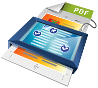

PDF's maken voor druk
vrijdag 29 oktober 2004 | Nerdisme
Oude rotten uit de grafische wereld (lees: QuarkXPress aanhangers) halen vaak hun neus op voor Adobe Indesign, zogezegd wegens de “onbetrouwbare output”. Onzin! Sinds de komst van Indesign beschikken ontwerpers over een schat aan nieuwe creatieve mogelijkheden. Denk maar aan transparanties, schaduwen en glows, het importeren van uitgesneden Photoshop afbeeldingen met zachte maskers, enz... Er was echter wel een keerzijde aan de medaille: samen met al dat moois staken een hoop nieuwe problemen de kop op in de PDF bestanden die drukkers uiteindelijk in handen kregen. Immers, hoe meer mogelijkheden, des te groter de kans op fouten. Maar dat mag geen reden zijn om ze niet te gebruiken!
Het komt er op neer dat je moet weten waar je mee bezig bent. Dat was bij mij twee jaar geleden niet het geval toen ik mijn eerste advertenties aanleverde bij een aantal vakbladen. Het schaamrood strekte zich uit van mijn wangen tot mijn navel toen ik het gedrukte resultaat zag.
Gelukkig leert een mens bij en ik kan intussen zeggen dat ik mijn werktuigen nu veeleer beheers dan zij mij (let op de nuancering). Het lijkt me daarom interessant om mijn werkwijze eens uit de doeken te doen voor het maken van een drukklaar PDF bestand van een standaard advertentie in vier kleuren.
In Indesign zijn twee zaken van cruciaal belang bij de export naar PDF: de PDF Export Preset en de Transparency Flattener Preset die je gebruikt. Deze 'presets' zijn een verzameling van allerlei instellingen die de kwaliteit van je PDF bepalen. Het zou niet alleen veel werk zijn om al deze aparte instellingen te overlopen, het is bovendien onnodig. Een aantal beproefde presets kan je immers gewoon downloaden van het internet.
Op de Belgische website CertifiedPDF.NET stellen verschillende organisaties en uitgeverijen hun drukvereisten ter beschikking voor hun klanten en leden. De site werd voornamelijk in het leven geroepen voor het verspreiden van PitStop profielen (daarover later meer), maar je vindt er ook settings voor Indesign, Acrobat en QuarkXPress. Voor deze toepassing (advertentie) ga ik af op de specificaties voor Certified PDF voor Advertenties in Magazines (een standaard in Nederland, vastgesteld door de Ghent PDF Workgroup). Ik heb de bestanden die nodig zijn voor deze handleiding voor jullie comfort reeds gebundeld (zip, 1,7Mb).
Het eerste wat moet gebeuren is de presets importeren in Indesign. Ga naar File - PDF Export Presets - Define. Kies in het kadertje voor 'Load' om de nieuwe preset te laden: [MagazineAds_1v2] vervoegt nu het lijstje. In mijn zip-bestand zit nog een tweede PDF Export Preset voor advertenties zonder bleed. Als je weet wat dit betekent, kan je die eventueel ook laden. Nu laden we de Transparency Flattener Preset: dat doe je via het Edit-menu. Zelfde scenario: kies 'Load' en [MagazineAds_1v2] verschijnt in het kadertje. Deze preset is een bescheiden, maar desalniettemin belangrijke variatie op de standaard [High Resolution] versie van Indesign.
That's it! Exporteer vanaf nu je Indesign kunstwerkjes (advertentie, affiche, flyer,...) naar PDF met de nieuwe PDF Export Preset (via File - Export). De kans is groot dat je op deze manier veel valkuilen zal omzeilen. Maar 100% garantie is er natuurlijk nooit... of toch?

Wie serieus bezig is met prepress, kan de aanschaf overwegen van Enfocus PitStop of het beperktere Instant PDF. Met deze plugins voor Adobe Acrobat kan je een PDF bestand van kop tot teen doorlichten op zoek naar fouten en onregelmatigheden. In bepaalde gevallen gaat de software zelfs je PDF corrigeren (vb. tekst in overdruk of knockout plaatsen, Pantone kleuren converteren, JPEG compressie vervangen...). Eenmaal je PDF voldoet aan een bepaalde vastgelegde norm — een PitStop Profile — krijgt je bestand de stempel “Certified PDF” mee. Zo weten zowel jij als de drukker dat je bestand 100% ok is. Dat is een niet te onderschatten luxe, zeker als er veel geld mee gemoeid is.
Ik controleer mijn advertenties nu altijd met PitStop voor ik ze uitstuur. Meer en meer uitgevers dwingen tegenwoordig hun klanten zelfs om uitsluitend nog Certified PDF's aan te leveren. Met een prijskaartje van 600 euro is PitStop wellicht niet voor de gewone particulier weggelegd, maar niets houdt je tegen om eens te stoeien met de gratis probeerversie die je kan downloaden op de website van Enfocus.
Ben op 30 oktober 2004
Hoewel ik InDesign niet gebruik, ben ik toch geïnteresseerd in het gebruik van PDF voor het afleveren van werkjes (voor school dan wel :-). Niet op grootte schaal natuurlijk, maar voor scripties e.a. is het wel handig.
In OpenOffice.org heb je drie standen (Printer, Prepress en nog iets). Nu vraag ik me af of de PDF's die gemaakt zijn door OOo geschikt zijn voor drukwerk door de redenen die je hier allemaal opnoemt.